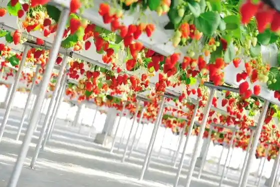
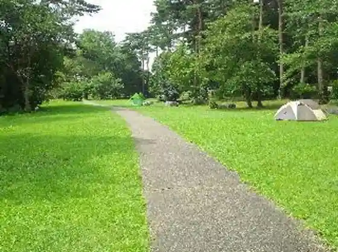
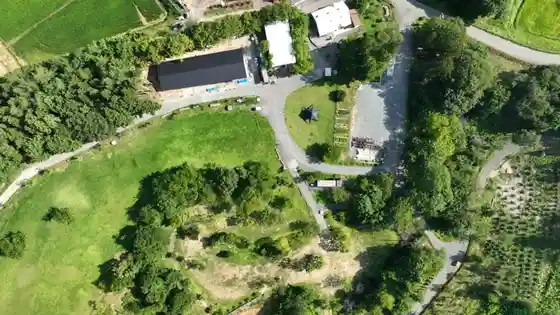

Kitakami Ichigo Sono
Kitakami, Iwate · 0197-62-3753 · Official / source link

Daitei Koen Campground (Kitakami Sogo Sports Park)
Kitakami, Iwate · 0197-72-8279 · Official / source link

Kyanpugu Land Be Aberu
Kitakami, Iwate · 090-3698-5616 · Official / source link
the campus (Za Kyanpasu) Toroika Forest
Kitakami, Iwate · 0197-63-3555 · Official / source link

Kitakami Ikoi Forest
Kitakami, Iwate · 0197-64-7447 · Official / source link
Natsu Abura Kogen Ski Area
Kitakami, Iwate · 0197-65-9000 · Official / source link
Kappo Benten
Kitakami, Iwate · 0197-64-1923 · Official / source link
Shu Buruberii Sono
Kitakami, Iwate · 090-8927-8871 · Official / source link
Kitakami Korokke
Kitakami, Iwate · 0197-64-2111 · Official / source link
Toroika
Kitakami, Iwate · 0197-62-4365 · Official / source link
Kitakami Ushi
Kitakami, Iwate · 0197-72-8238 · Official / source link
Taishu Engeki to Yu Dokoro (Masu Kitakami)
Kitakami, Iwate · 0197-64-7400 · Official / source link
Yoshihisa Jo Shuzo
Kitakami, Iwate · 0197-66-2625 · Official / source link
Waga Kawa Fureai Plaza
Kitakami, Iwate · 0197-72-8279 · Official / source link
Waga Kawa Green Park
Kitakami, Iwate · 0197-72-8279 · Official / source link
Iwasawa Mizubasho Gunsei Chi
Kitakami, Iwate · 0197-65-0300 · Official / source link
Nyoi Wa Tera
Kitakami, Iwate · 0197-64-7860 · Official / source link
Tabun In Isawa Ie
Kitakami, Iwate · 0197-65-0098 · Official / source link
Kitakami Heiwa Kinen Tenjikan
Kitakami, Iwate · 0197-73-5876 · Official / source link
Kitakami Ritsu Museum (Waga Bunkan)
Kitakami, Iwate · 0197-64-1756 · Official / source link
Kitakami Zazen Kusa Village
Kitakami, Iwate · 0197-73-5299 · Official / source link
Satohachiro Memorial Museum (Shikara Re Bozu) (Kyukanchu)
Kitakami, Iwate · 0197-65-5401 · Official / source link
Tachibana Bishamon Do
Kitakami, Iwate · 0197-65-0098 · Official / source link
Natsu Abura Gorge
Kitakami, Iwate · 0197-64-5211 · Official / source link
Kitakami Kanko Bussan Kan (Akusesu)
Kitakami, Iwate · 0197-61-3075 · Official / source link
Ten Katsuji Resutohausu
Kitakami, Iwate · 0197-64-2110 · Official / source link
Gyukei Yama
Kitakami, Iwate · 0197-72-8241 · Official / source link
Kitakami Yakyoku no Hi
Kitakami, Iwate · 0197-65-0300 · Official / source link
Hakucho Hirai Chi (Shin Tsutsumi / Sango Hashi)
Kitakami, Iwate · 0197-65-0300 · Official / source link
Kitakami Ritsu Museum (Honkan)
Kitakami, Iwate · 0197-64-1756 · Official / source link
Tone Yama Mitsuhito Kinen Art Museum
Kitakami, Iwate · 0197-65-1808 · Official / source link
Kitakami Eki Tourist Information
Kitakami, Iwate · 0197-64-5211 · Official / source link
Kunimi Yamahai Jiseki
Kitakami, Iwate · 0197-65-0098 · Official / source link
Ezuriko Kofun Gun
Kitakami, Iwate · 0197-65-0098 · Official / source link
Kabayama Iseki (Kabayama Rekishi no Plaza)
Kitakami, Iwate · 0197-65-0098 · Official / source link
Oni Kembu (Onikembai)
Kitakami, Iwate · 0197-72-8241 · Official / source link
Nippon Gendai Shiika Literature Museum
Kitakami, Iwate · 0197-65-1728 · Official / source link
Kitakami Ritsu Park (Ten Katsuji)
Kitakami, Iwate · 0197-65-0300 · Official / source link
Sakura Horu
Kitakami, Iwate · 0197-61-3300 · Official / source link
Nyu Hatake Dam
Kitakami, Iwate · 0197-65-0300 · Official / source link
Michi no Ku Minzoku Village
Kitakami, Iwate · 0197-72-5067 · Official / source link
Oni no Kan
Kitakami, Iwate · 0197-73-8488 · Official / source link